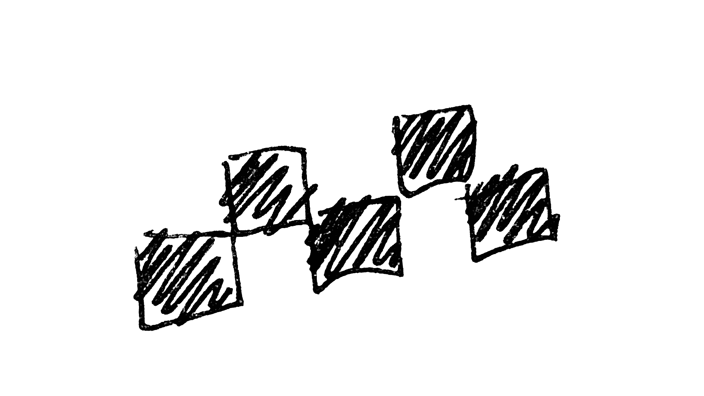

Про таксистов в Перу
Не ты их вызываешь а они тебя. Моргают фарами, сигналят. Стоишь на перекрёстке, ждёшь зелёный сигнал светофора, в перед тобой останавливается таксист, преграждает тебе путь, и начинает убеждать, что тебе нужно сесть к нему. Как в кино, как будто за тобой гонятся секретные агенты, а он приехал тебя спасать. 😄
Больше удивляет только когда так же делают кондуктора автобусов. Идёшь мимо остановки по своим делам, и тут тебе в ухо орут: "Чувааак! Тебе по-любому надо в Чориос! Прыгай к нам!" 🤦
Аэропортовские таксисты одеты с иголочки. Брючки, белая рубашечка. Кто-то в пиджаке и даже с галстуком.
Но не ведитесь на внешний вид: они такие же наглые. Стоят прям под знаком "здесь запрещено предлагать услуги такси". Свистят всем выходящим, машут, типа иди сюда. Причём с такой настойчивостью, что как будто это твой старый друг, который приехал тебя встречать.
Можно было бы предположить, что за этим всем скрывается необходимость кормить семью. Наверное, это так.
Однако, есть же агрегаторы такси: Uber, и недавно появились ещё китайский DiDi и яндексовский Yango. По разговорам с таксистами у меня впечатление, что работая через агрегатор, вполне можно нормально зарабатывать.
Так что думаю, что теми таксистами, которые свистят туристам в аэропорту и навязывают свои услуги в городе, движет жажда наживы. Туриста же можно облапошить.
Со знакомого пытались взять в 3 раза больше чем поездка стоила бы в Убере. Уверен, это ещё не самый вопиющий случай.
Разумеется, это явление не уникально для Перу. Наглые таксисты - это то, что объединяет и Россию, и США, и Европу, и Египет, и Турцию, и Перу, и сказочное Бали. Просто где-то цивиллизация и агрегаторы немного обуздали их пыл, а где-то ещё нет.
Будьте готовы. Либо перед полётом в новую страну обязательно поставьте агрегатор такси, который там работает. Либо готовьтесь неистово торговаться.